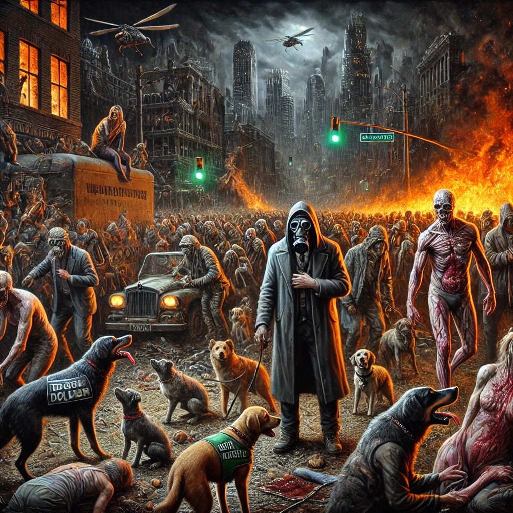

작가
정유정
출판일
2013년
감상평에 대한 AI그림
인수공통감염병을 주제로 인간과 친밀한 개와 인간을 매개로 한 전염병이 확산된 아포칼립스 상황을 연출한다.인간이 극심한 상황속 어디까지 무너질 수 있는지 깊이 생각해보게 하며 그런 상황속에서 난 무엇을 해야하는지에 대한 질문을 던진다.

감상평에 대한 AI평가
~~~~AI평가~~~~~
✨ 인수공통감염병이라는 시의적절하고 중요한 주제를 명확하게 제시했습니다. 이는 독자의 흥미를 유발하고 책에 대한 기대를 높입니다.
✨ "인간이 극심한 상황 속 어디까지 무너질 수 있는지"와 "그런 상황 속에서 난 무엇을 해야 하는지"라는 질문을 통해 책의 핵심 메시지를 잘 드러냈습니다. 이는 독자에게 깊은 생각거리를 제공합니다.
✨ "인간과 친밀한 개와 인간을 매개로 한 전염병이 확산된 아포칼립스 상황"이라는 묘사는 독자에게 강렬한 이미지를 심어줍니다. 이는 책의 분위기와 내용을 효과적으로 전달합니다.